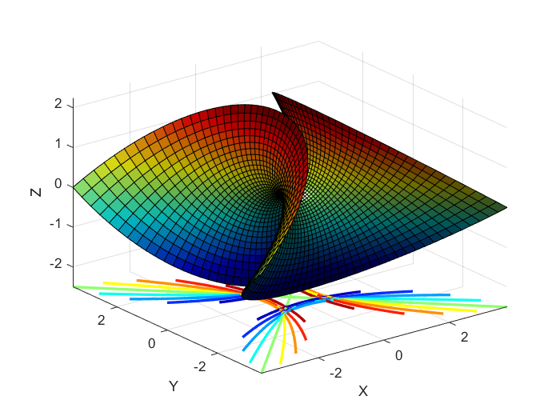

Contents
Problem 1
figure(1)
u = linspace(-1.5,1.5,50);
v = u;
[u, v] = meshgrid(u,v);
x = u.*(1-((u.*u)./3)+(v.*v));
y = -v.*(1-((v.*v)./3)+(u.*u));
z = ((u.*u)-(v.*v));
handles = surfc(x,y,z);
hContour = handles(2);
hContour.ContourZLevel = -2.5;
hContour.LineWidth = 2;
camlight left
colormap('jet')
axis tight
xlabel('X')
ylabel('Y')
zlabel('Z')

Problem 2
figure(2)
a = 1; b = 1; c = 1;
u = linspace(-2, 2, 40);
v = linspace(0, 2*pi, 40);
[v, u] = meshgrid(u, v);
x = a.*cosh(v).*cos(u);
y = b.*cosh(v).*sin(u);
z = c.*sinh(v);
mesh(x, y, z)
colormap('cool')
colorbar('AxisLocation','in')
axis tight
xlabel('X')
ylabel('Y')
zlabel('Z')
set(gca,'BoxStyle','full','Box','on')
Problem 3
figure(3)
x = linspace(-5.12,5.12,100);
y = linspace(-5.12,5.12,100);
[X, Y] = meshgrid(x, y);
Z = 20 + (X.^2 - 10.*cos(2.*pi.*X)) + (Y.^2 - 10.*cos(2.*pi.*Y));
surfc(X,Y,Z,'FaceColor','interp',...
'EdgeColor','none',...
'FaceLighting','gouraud')
colormap('jet')
camlight('headlight')